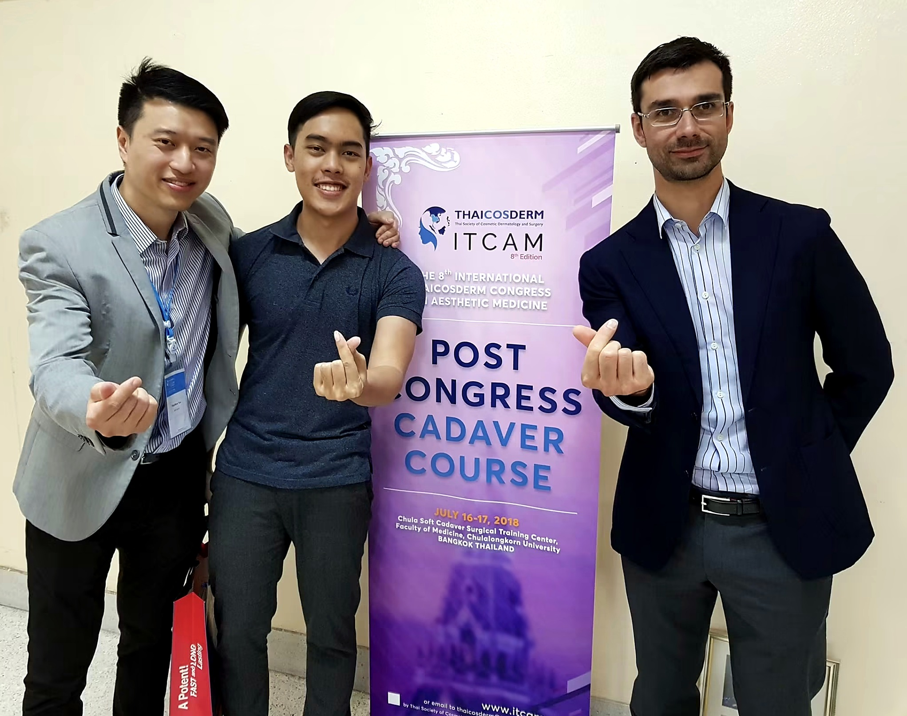
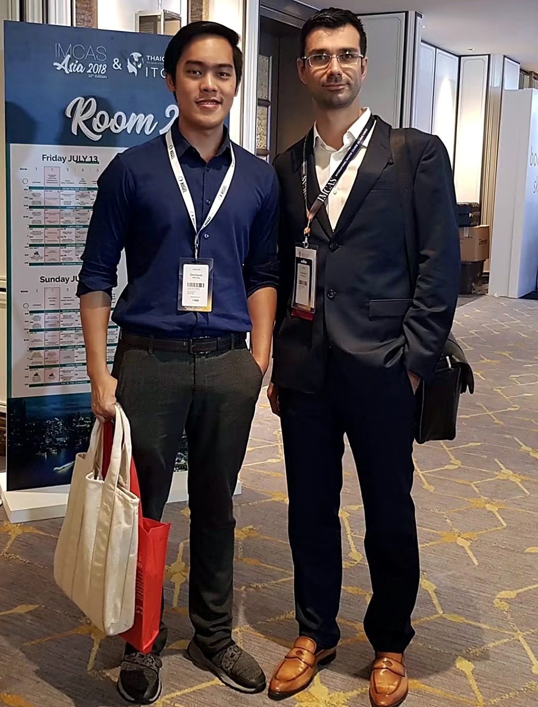
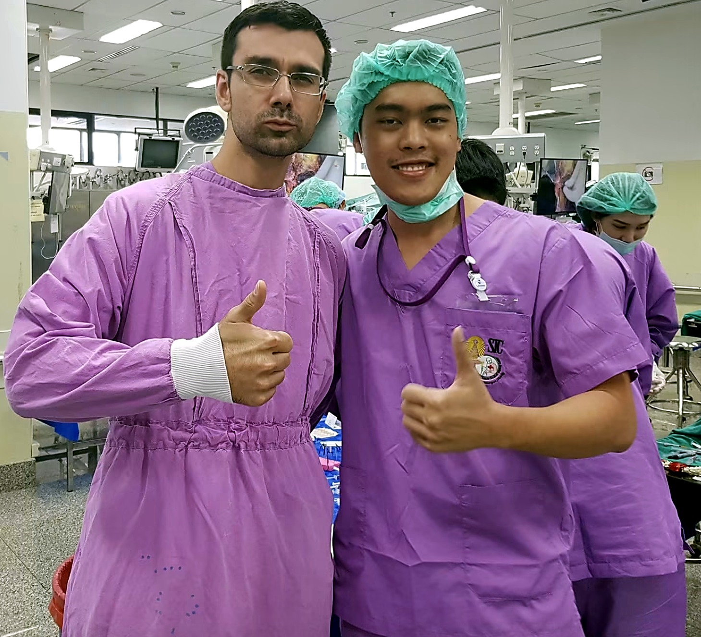
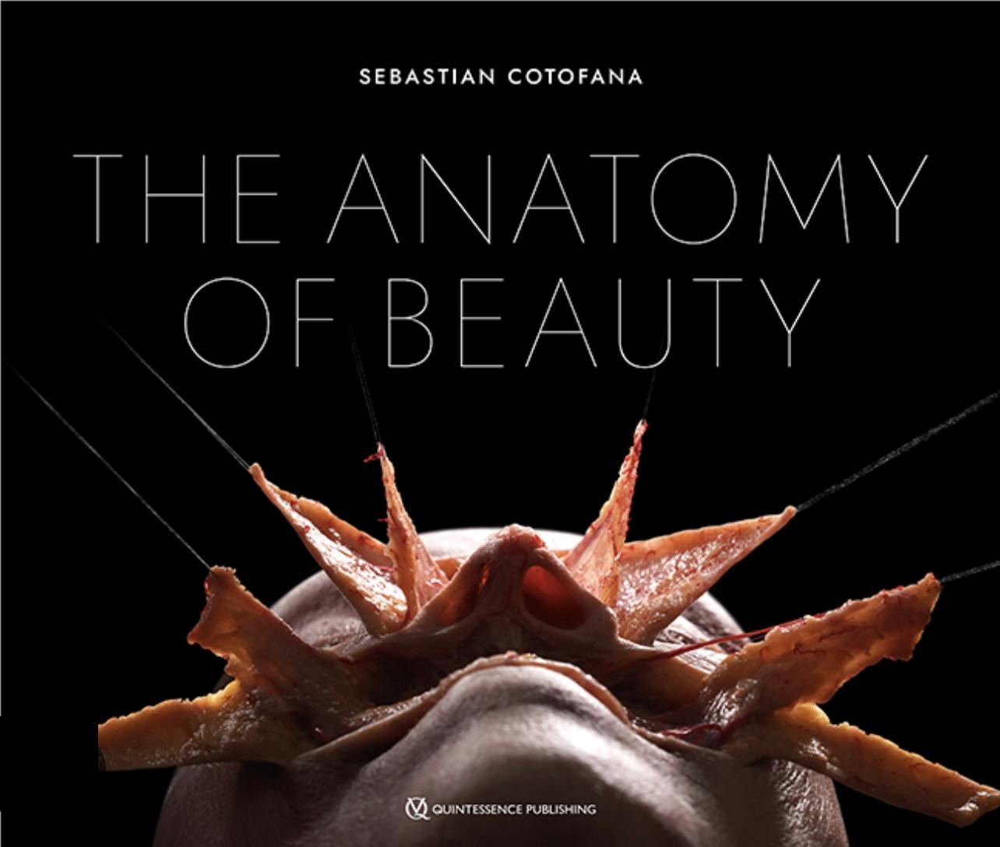

FACIAL ANATOMYRESEARCH
NEW RESEARCH
เอ็นยึดใบหน้า
แก่ตัวไหม?
FOR YEARS
หลายปีที่ผ่านมา
เชื่อกันว่าเอ็นยืดและหลวม
ตามอายุ
ทำให้หน้าย้อย เนื้อเยื่อเลื่อนลง
แต่ความเชื่อนี้
ถูกตั้งคำถาม
โดยนักกายวิภาคใบหน้า
Prof. Sebastian Cotofana
8 YEARS AGO · 2018
เรียนผ่ากายวิภาคใบหน้า
แบบตัวต่อตัว กับ Prof. Cotofana
นักกายวิภาคใบหน้าระดับโลก ผู้เขียน The Anatomy of Beauty

ITCAM Post-Congress Cadaver Course · จุฬาลงกรณ์มหาวิทยาลัย

IMCAS Asia 2018

Cadaver Lab · 2018

หนังสือเล่มล่าสุด
ถ้าเอ็นหลวมจริง
ทำไมเหนียงหยุดตรง
จุดเอ็นยึดพอดี?
เหนียงไม่ไหลเลยไปถึงคาง
เพราะเอ็นขากรรไกรล่างยังยึดอยู่
THE STUDY
ศึกษาเอ็นโหนกแก้ม
ในหนู 3 ช่วงวัย
ตรวจด้วยพยาธิวิทยา · การย้อมคอลลาเจน
กล้องจุลทรรศน์อิเล็กตรอน
Zhang et al. · Aesthetic Surgery Journal 2023
THE RESULTS
เมื่ออายุมากขึ้น
เอ็นเปลี่ยนไปอย่างไร
ความหลวม= ไม่เพิ่มขึ้น
ความแข็ง▲ เพิ่มขึ้น
มัดคอลลาเจน▲ หนาขึ้น
การเรียงตัวของเส้นใย▲ เป็นระเบียบขึ้น
หลอดเลือด▼ ลดลง
KEY FINDING
เอ็นไม่ได้หลวม
แต่แข็งขึ้น
เอ็นยังยึดแน่น
เนื้อเยื่อระหว่างเอ็นต่างหากที่หย่อนลง
หน้าย้อย
ต้องดูให้ถูกชั้น
ไม่ใช่แค่ "กระชับเอ็น"
แต่ดูแลเนื้อเยื่อรอบเอ็น
ตั้งแต่กระดูก ไขมัน ถึงผิว
อ่านบทความเต็ม · vinfinityclinic.com
อ้างอิง: Zhang et al., Aesthetic Surgery Journal 2023
และบทความของ Prof. Sebastian Cotofana
งานในสัตว์ทดลอง ยังต้องยืนยันในคน · ภาพประกอบเชิงแนวคิด